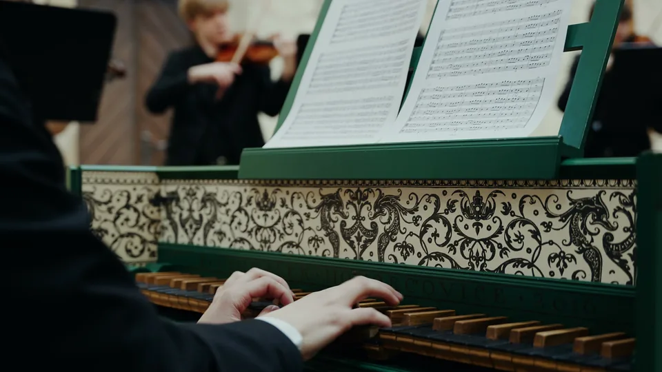

Náš příběh
Na začátku jich bylo pět
Soubor vznikl v roce 2024 na Konzervatoři Pardubice, a to ze zájmu samotných studentů. Začínal jako komorní uskupení pěti hráčů.
Postupně se rozrostl na jedenáct hráčů a uměleckého garanta. K principům barokní komorní hry se ale pořád vrací.
V čele souboru stojí student, varhaník a cembalista Adam Suk jako umělecký vedoucí a profesor MgA. Michal Hanuš jako umělecký garant.